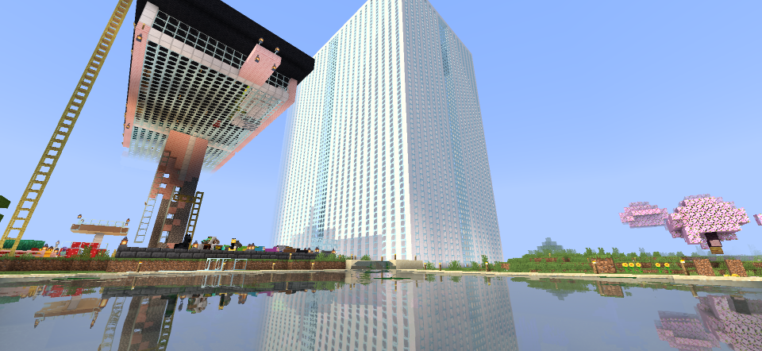
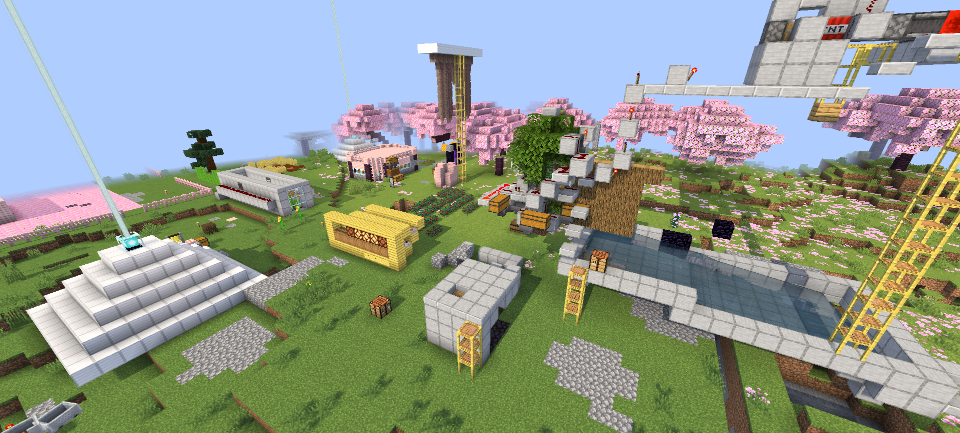
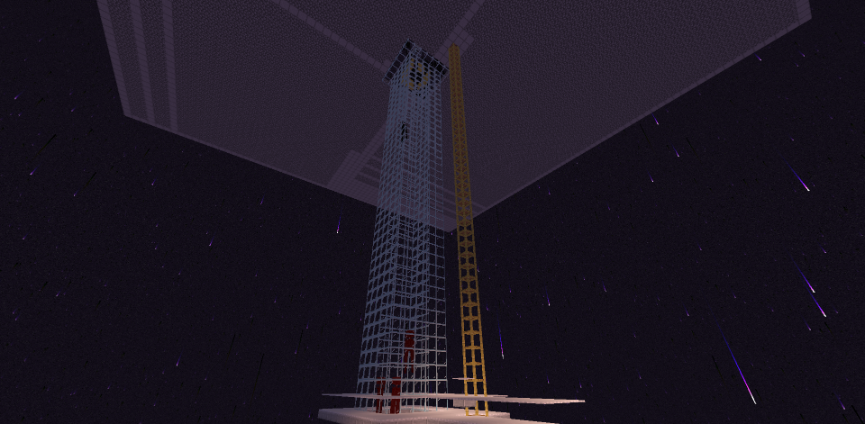
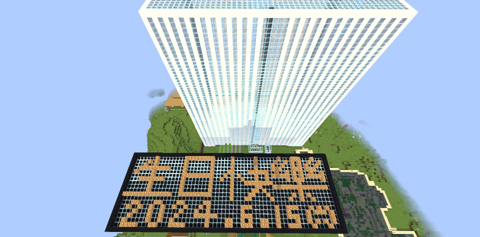
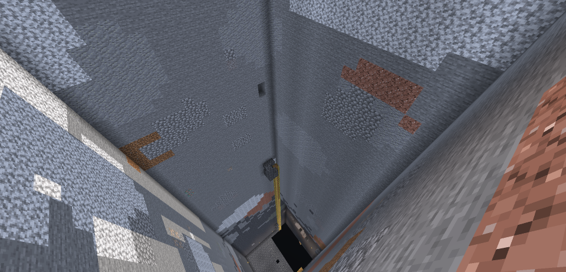
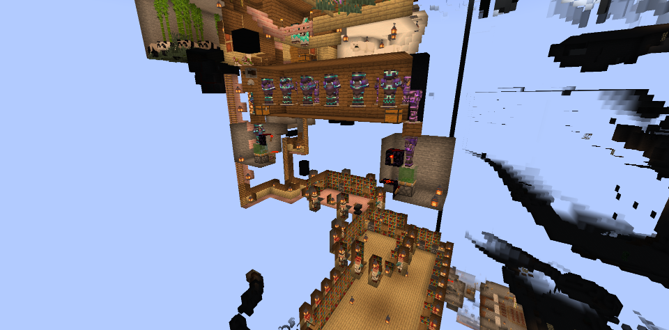
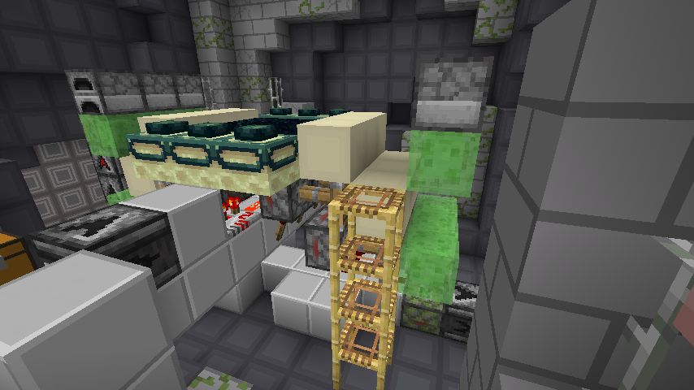

關於主伺服器
歡迎來到主伺服器！本伺服器致力於提供穩定、純粹且充滿樂趣的生存環境。在這裡，你可以與好友們一起探索世界、建造宏偉的建築、開闢繁華的鐵路交通網絡。
伺服器內建了多項效能優化模組與礦車加速系統，在確保流暢遊戲體驗的同時，最大程度保留了麥塊最原始的生存魅力。快複製上方的 IP，加入我們的行列吧！







主伺服器更新：版本 26.2
2026年7月10日- 更新硫磺系列生態域與方塊。
- 新增硃砂系列方塊。
- 新生物：硫磺立方怪：外型類似史萊姆，有小型與中型，可餵食史萊姆球加速成長。
主伺服器更新：版本 26.1
2026年4月- 引入全新自訂生物外觀與表情動畫，讓世界更有生機。
- 新增「金蒲公英」特殊合成配方與對應道具。
- 升級環境與戰鬥音效，立體環繞質感更真實。
伺服器效能與交通優化
2026年3月- 安裝 Audaki Cart Engine (Faster Minecarts) 技術。
- 大幅提升礦車在直線與彎道的巡航速度，減少交通等待。
- 優化地底鐵路實體演算，大幅降低多人上線時的伺服器負擔 (TPS)。
伺服器由 Aternos 託管改為自架
2025年7月9日- 延遲由 300ms 降低至 20ms，約降低15倍。
- 伺服器將全天候開啟。
- 更換 IP 位置為 220.137.195.144:25565。
主伺服器已升級至 1.21.6
2025年6月22日- 暫不支持基岩版。
- 定位條默認開啟。
主伺服器更新至 1.21.5、首次支援「基岩版」
2025年5月18日- 採用 Geyser 模組連結基岩板，但仍不穩定。
- 更新內容：Java版1.21.5 - 中文 Minecraft Wiki (點擊)
主伺服器更新至 1.21.4
2024年12月22日- 新增生態域：蒼白之園。
- 蒼白橡木等附屬物品
主伺服器成功更新至 1.21
2024年6月17日- 已成功安裝 Lithinm，若無法遊玩請盡快回報。